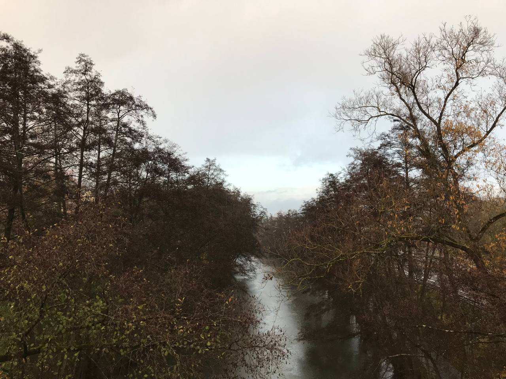
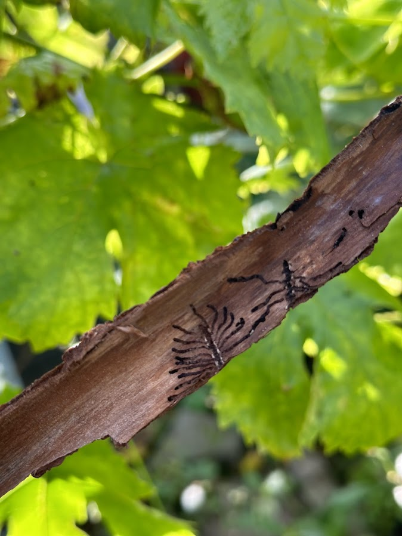
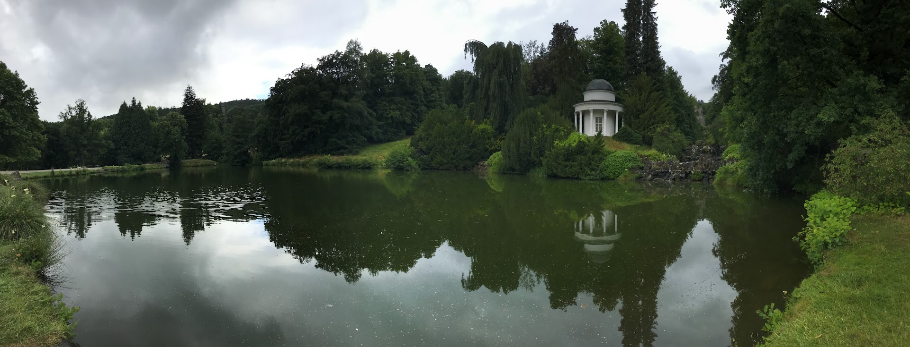
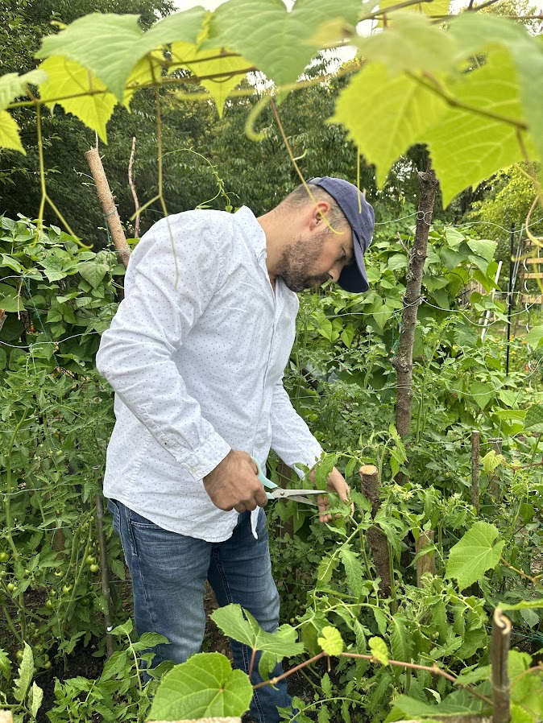
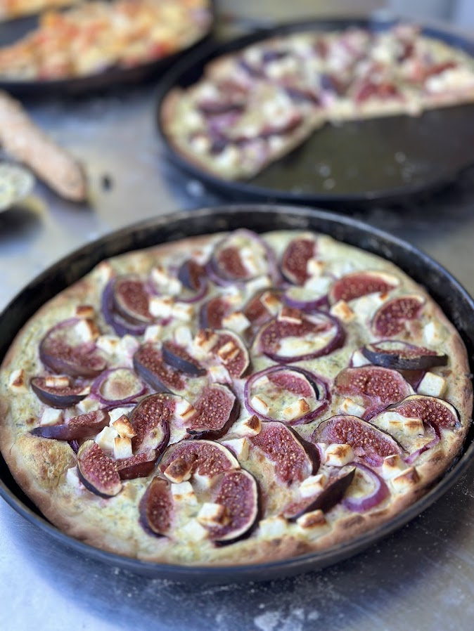
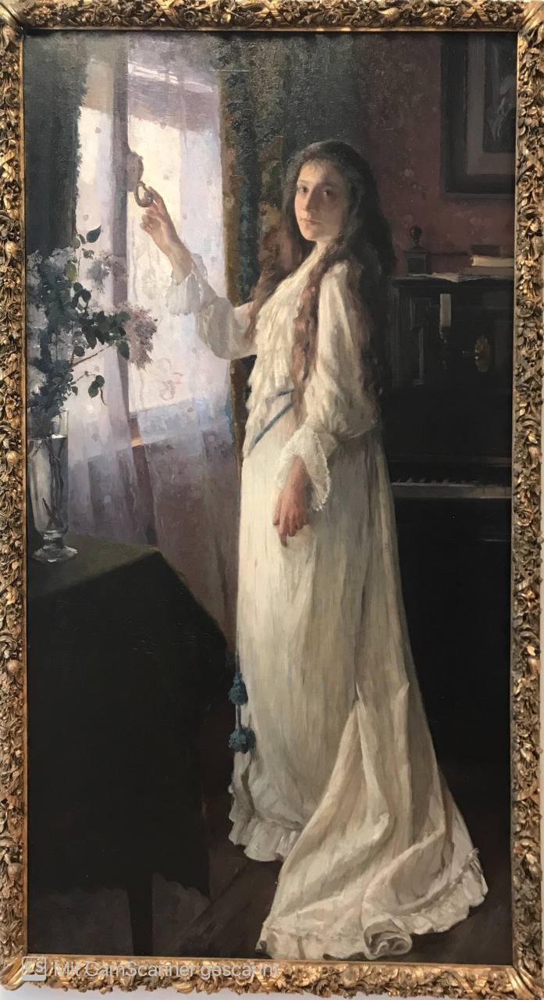
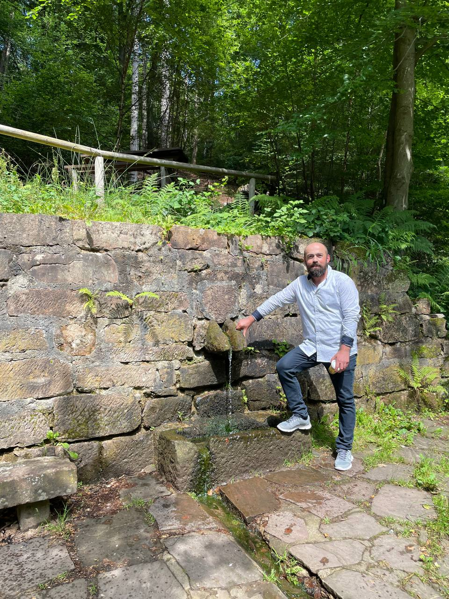
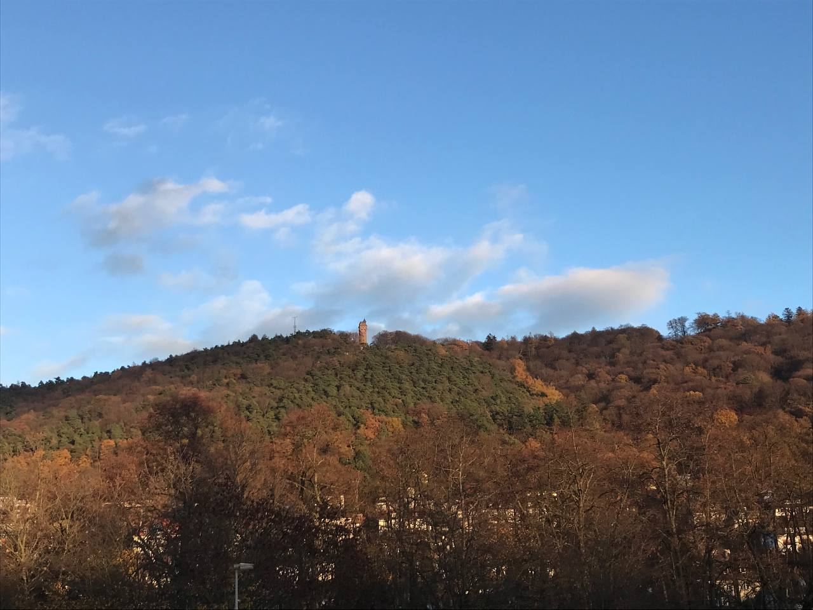

Willkommen im Blog von Mustafa

In meinem Hobbygarten finde ich wahren Frieden und eine Verbindung zur Natur. Jedes Wochenende widme ich Stunden der Pflege meines Gemüses und meiner Blumen und beobachte, wie sie aus kleinen Samen zu wunderschönen Lebewesen heranwachsen. Ich habe Hochbeete für Tomaten und Paprika angelegt und einen besonderen Bereich für Kräuter wie Basilikum, Minze und Rosmarin, die meinen Gerichten wunderbare Aromen verleihen.
Gärtnern lehrt mich Geduld und Ausdauer. Nicht alles wächst wie geplant, aber jede Herausforderung bringt neue Erkenntnisse. Besonders gerne experimentiere ich mit Mischkulturen – ich entdecke, welche Pflanzen sich gegenseitig unterstützen. Kürzlich habe ich mit dem Kompostieren begonnen und verwandle Küchenabfälle in nährstoffreiche Erde, die den natürlichen Kreislauf im Garten schließt.
Über die praktischen Aspekte hinaus ist mein Garten mein Meditationsraum. Das einfache Gießen der Pflanzen in der Morgensonne bringt eine Achtsamkeit, die mich durch den Tag begleitet. Ich möchte diese Reise mit Ihnen teilen – sowohl die Erfolge als auch die Lektionen, die ich unterwegs gelernt habe.

Während meines Besuchs in Kassel, Deutschland, war ich vom prächtigen Bergpark Wilhelmshöhe, Heimat des berühmten Herkules-Denkmals, fasziniert. Der weitläufige Park, ein UNESCO-Weltkulturerbe, bietet eine beeindruckende Kaskade, die unter dem wachsamen Blick der Herkulesstatue beginnt und dramatisch zum ruhigen See hinabfließt.
Der See selbst ist an ruhigen Tagen ein perfekter Spiegel, der das üppige Grün der Umgebung und die ferne Silhouette des Herkules auf dem Hügel widerspiegelt. Beim Spaziergang am Ufer fiel mir auf, wie die sorgfältig gestaltete Landschaft eine harmonische Verbindung von natürlicher Schönheit und menschlicher Kunstfertigkeit schafft – ein Markenzeichen der deutschen Romantik.
Als das Abendlicht die Szene in goldene Töne tauchte, versammelten sich Besucher am Ufer, einige skizzierten die malerische Aussicht, andere saßen einfach in stiller Bewunderung. Dieses bemerkenswerte Wasserspiel ist nicht nur Zierde, sondern ein technisches Wunderwerk seiner Zeit und Teil eines komplexen hydraulischen Systems, das Besucher seit Jahrhunderten fasziniert.

Als ich heute Morgen im Garten sorgfältig die Tomatenblätter zurückgeschnitten habe, fiel mir auf, wie jeder Schnitt stärkere Stängel zum Vorschein brachte. Das Entfernen überschüssigen Laubs sorgt für bessere Belüftung und lenkt die Energie in die Fruchtbildung. Mit der Sonne, die durch das Rankgitter scheint, habe ich diesen perfekten Gartenmoment eingefangen – Hände voller Erde, der süße Duft von Tomaten in der Luft und die Aussicht auf eine reiche Ernte. Diese einfachen Gartenrituale verbinden mich mit den Jahreszeiten und Kreisläufen, die das moderne Leben oft verdeckt.

Backtag
Marburger Museumsbesuch
Spaziergang in der Natur
NaturfotografieTravel New York London IKEA NORWAY DIY Ideas Baby Family News Clothing Shopping Sports Games